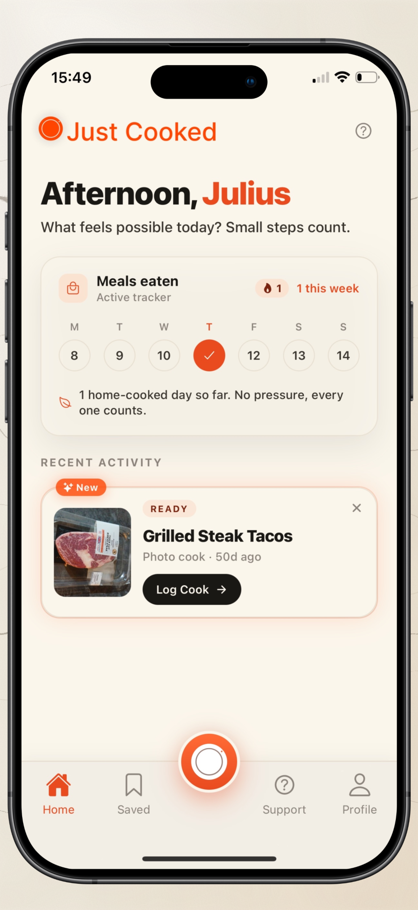
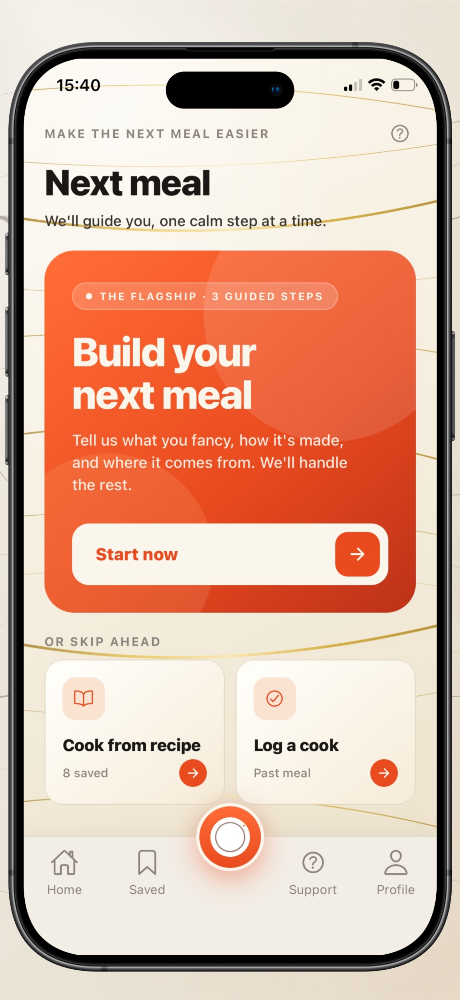
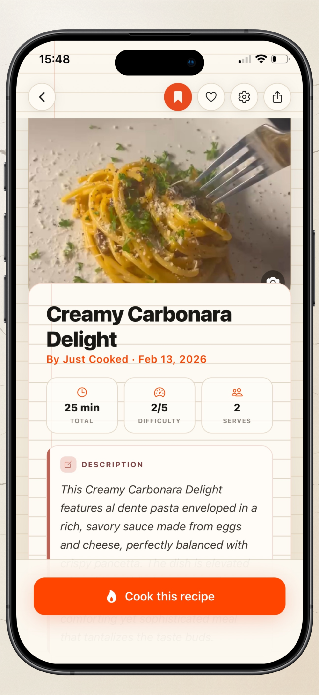
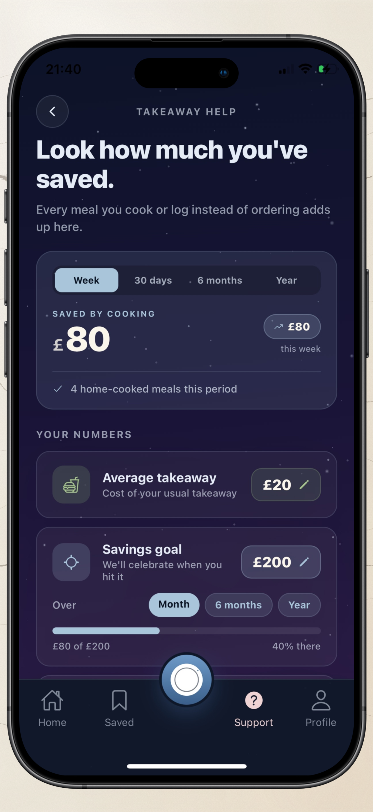
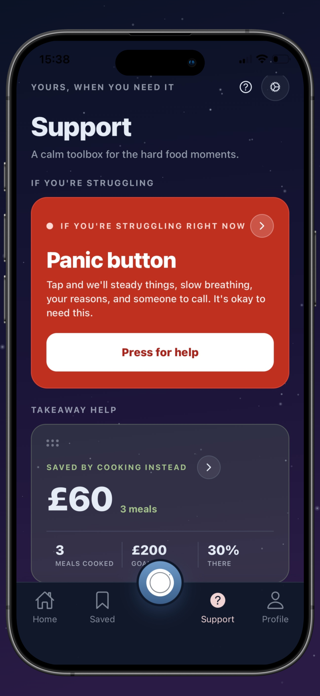
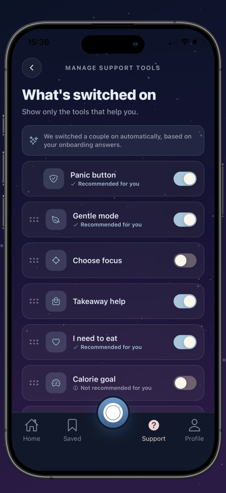

When food feels hard,
we make the next meal easier.
Food feels hard for a lot of people. Just Cooked helps you find your way back, one small meal at a time.

Food is never just food.
When food feels hard, the cost shows up everywhere.
Your relationship with food can change, and you do not have to do it alone.
Your next meal, decided for you.
Next Meal is the heart of the app. It takes the deciding off your plate and walks you through three calm steps, then cooks up the rest.
Tell us what you fancy
A craving, or leave it open. We take it from there.
We shape it to you
Pre-set from your profile: your diet, your time, the things you cannot eat. Tweak any of it for this meal only.
Pick where it's built from
Your full pantry, a few ingredients, a photo of what you have, or just an idea. Then we cook up the rest.


You see exactly what we will make before anything happens. Then it is one tap, and we take the deciding off your plate.

Cook what you have. Keep what you'd have spent.
Every meal you cook instead of ordering quietly adds up. Tell Just Cooked your usual takeaway cost, and it keeps a gentle tally of what you save. Every cook counts, even a quick one you log by hand.
- Built from the pantry you already have, so there is less going to waste.
- Logging a meal you made is free and keeps your savings and history complete.
- Watch it add up over time, with encouragement rather than judgement.
A calm toolbox for the hard food moments.
It is the one space in Just Cooked made just for the harder days. Seven gentle tools so far, picked for you based on what you share during setup, and your hub keeps growing.


Panic button
For the hardest moments. Slow guided breathing, plus the helplines and the people you trust, a tap away.
I need to eat
When eating feels like too much, it finds a meal in about five minutes from what you have. No decisions, no numbers.
Takeaway savings
Tell it your usual takeaway cost, and every meal you cook instead adds to what you have saved. It really adds up.
Gentle mode
Soften the whole app whenever you want. Quietly hide numbers, streaks and goals so food feels lighter.
Choose your focus
Pick one small, doable thing to follow this week. Change it whenever, with no streaks lost.
Calorie goal
A gentle daily calorie number to aim for, if a target helps you. An estimate, not a rule, and always optional.
Protein goal
A gentle daily protein target across your meals, when that is useful to you. Optional, and easy to switch off.
More on the way
Your hub is personal, and it keeps growing.
Just Cooked is not a medical or therapeutic tool. On the hardest days, it points you toward people who can help.
Start where you are.
Any amount counts and any meal is enough. Download Just Cooked and let us take the deciding off your plate.